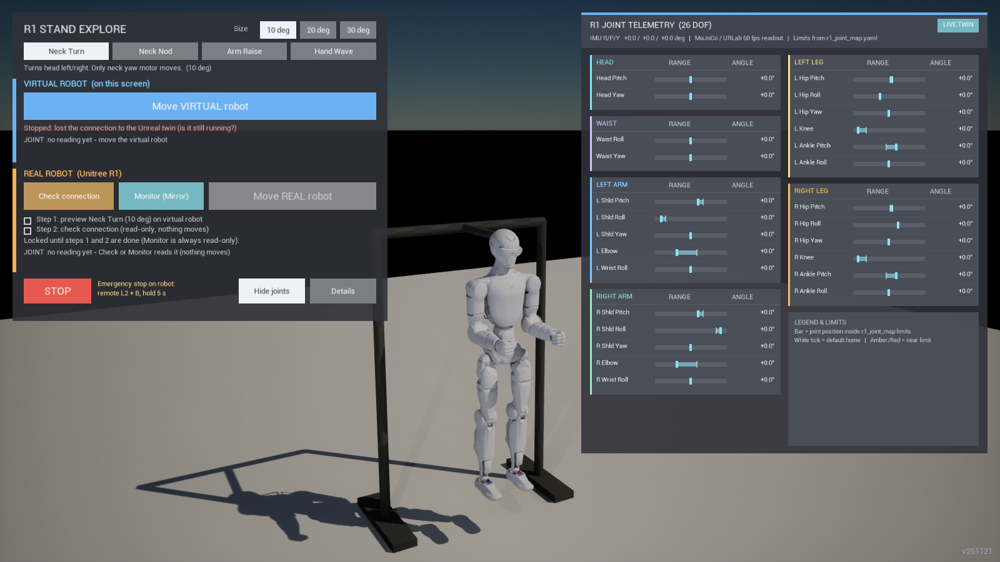
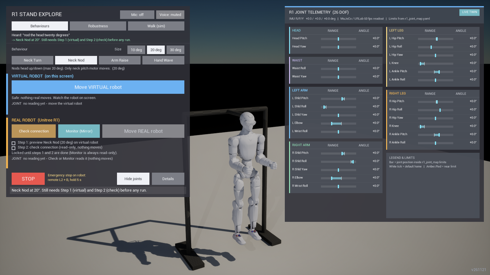
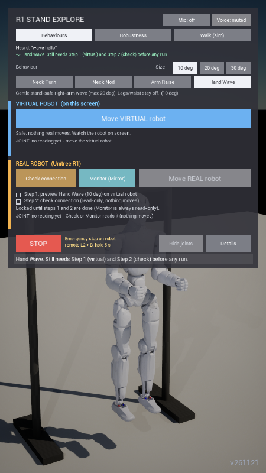
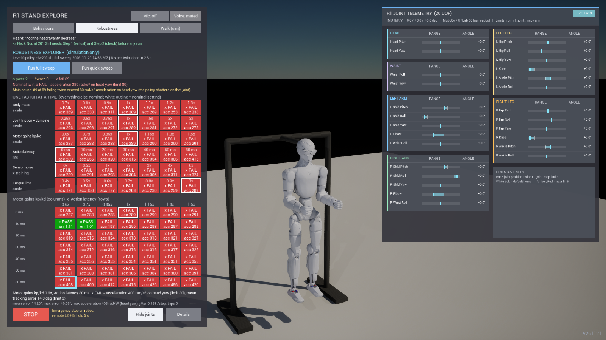
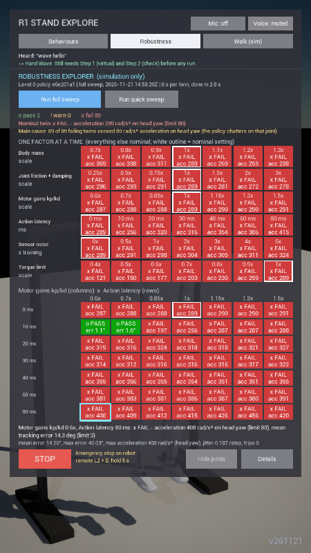
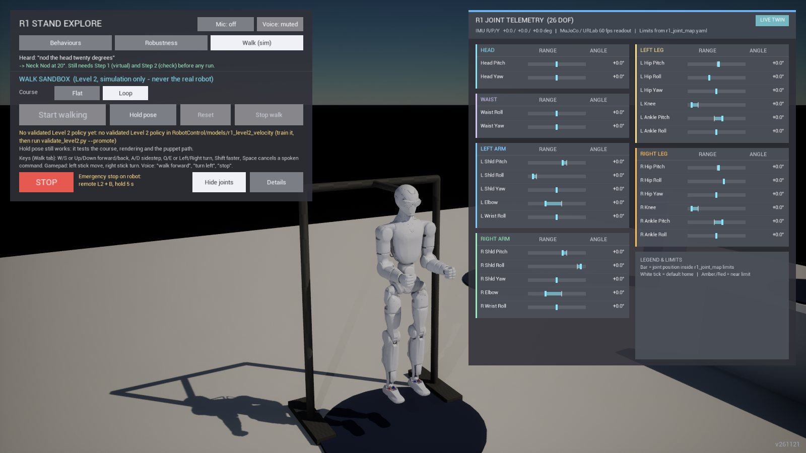
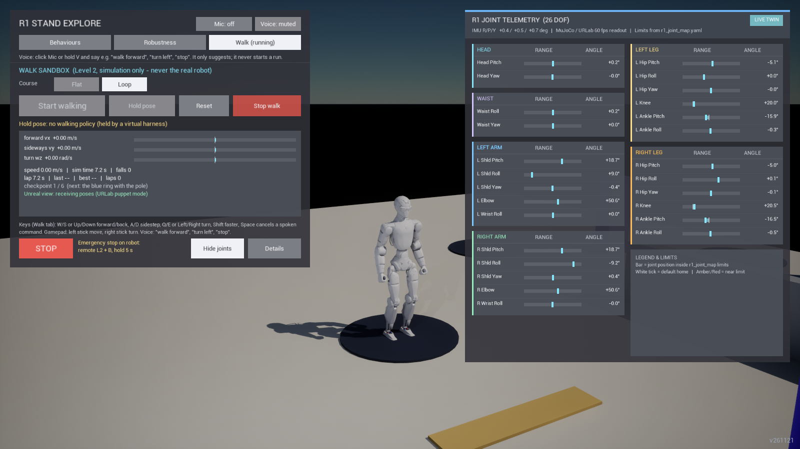
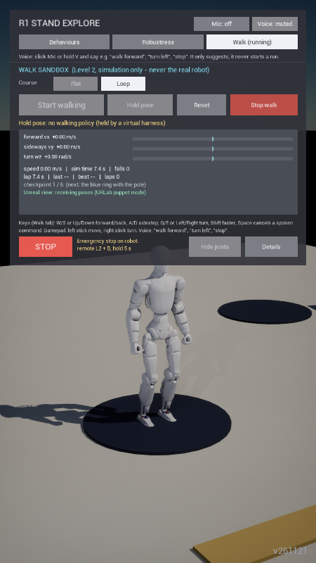

Unreal twin: voice, robustness explorer, walk sandbox
2026-11-21 · UE 5.8.4 standalone game, level R1_Stand, captured unattended with
-PanelCapture=<dir> -R1Service=http://127.0.0.1:8766 against the live behaviour service
(docs/service_api.md), at 1600×900 and 450×800.
Before


After
- A tab strip under the title: Behaviours (the five HUD anchors, unchanged), Robustness, Walk (sim). STOP, the remote e-stop note, Joints and Details stay on every tab.
- Voice on every tab: Mic toggles listening, V is push-to-talk, Voice: on/muted toggles spoken replies. Windows SAPI recognises offline; the phrase goes to
POST /assistant/interpret, and the suggestion fills in the selection like a click. It never starts anything. Walk phrases set the sandbox velocity. - Narrow or short windows draw the whole panel scaled (the mouse is mapped back), so 450×800 shows every control. The joint view is disabled when there is no room for it.
Behaviours tab + voice


Robustness tab


Walk tab (simulation only)

/walk/state geometry) is drawn around the stand.

Not verified
- A real microphone: SAPI initialised (log:
R1VoiceSapi: recogniser ready, voice ready), but no one spoke. The phrase was injected with-VoiceTest, and spoken replies are muted in capture runs. - Driving a walking policy (keys, gamepad, voice velocity): no validated Level 2 policy exists yet. Only hold mode ran, where commands are clamped to zero.
- A gamepad was not connected.